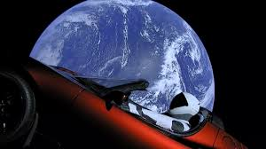

О компании SpaceX
 Основана в 2002 году прежним акционером PayPal и CEO Tesla Motors Илоном Маском, с целью сократить расходы на полёты в космос, открывая путь к колонизации Марса. Компания разработала ракеты-носители Falcon 1 и Falcon 9, с самого начала преследуя цель сделать их многоразовыми, и космический корабль Dragon (выводимый на орбиту теми же Falcon 9), предназначенный для пополнения запасов на Международной космической станции. Пассажирская версия корабля Dragon V2 для транспортировки астронавтов на МКС находится в финальной фазе разработки. С 2015 года участвует также в реализации проекта вакуумного поезда в финальной фазе Hyperloop.Целью Маска является использование инновационной многоразовой ракетной техники, которая способна не только вывести на орбиту туристов, но и создать устойчивую колонию на Марсе. Он заявляет, что начнет отправлять пилотируемые миссии на Красную планету уже к 2022 году.
SpaceX на самом деле не является настоящим именем компании. Полное название компании — Space Exploration Technologies Corporation.
Кpоме первой стыковки с МКС, SpaceX сделала еще одну уникальную вещь — научные эксперименты, которые касались грузов, были разработаны 15 студентами.В 2017 году SpaceX стала частью космической истории.
Ракета Falcon 9 взлетела со стартового комплекса Launch Complex 39A в Космическом центре Кеннеди — с того же, где началась миссия "Аполлон-11" на Луну. Также это был первый старт на объекте с 2011 года.
Список работников

Иванов Иван Иванович
Со-основатель компании PayPal; основатель, совладелец, генеральный директор и главный инженер компании SpaceX; председатель совета директоров, генеральный директор и главный, единственный идейный вдохновитель (Chief Product Architect) компании Tesla; также был членом совета директоров компании SolarCity, основанной его двоюродными братьями, до её слияния с Tesla.Пассажирская версия корабля Dragon V2 для транспортировки астронавтов на МКС находится в финальной фазе разработки. С 2015 года участвует также в реализации проекта вакуумного поезда в финальной фазе Hyperloop.

Сидоров Александр Сергеевич
31 октября 2008 года Александр опубликовал статью «Bitcoin: A Peer-to-Peer Electronic Cash System»в списке рассылки о криптографии (The Cryptography Mailing list) metzdowd.com, в которой описал Биткойн — полностью децентрализованную систему электронной наличности, не требующую доверия третьим сторонам. В начале 2009 года он выпустил первую версию биткойн-кошелька и запустил сеть Биткойн.